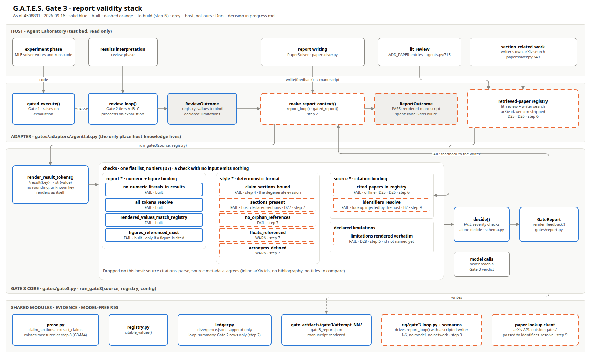

G.A.T.E.S. · Gate 3
Does every number and every citation in the manuscript trace to something the run actually measured or retrieved?
A flat list of deterministic checks. No model decides a verdict. A spent budget raises, and no manuscript is emitted.
Three gates, three phases. The exhaustion policy differs on purpose.
Did the experiment actually run, and record its numbers as measurements?
Budget spent: raise. No valid run, no paper.
Are the recorded numbers plausible, and did the run follow its declared plan?
Budget spent: proceed, with the discrepancies declared.
Does the manuscript say only what Gates 1 and 2 let through?
Budget spent: raise. An unverifiable manuscript is not emitted.
Gate 2 hands Gate 3 two things: ReviewOutcome.registry, the only values the manuscript may cite, and ReviewOutcome.declared, the limitations it must state.
The writer emits
\section{Results}
Accuracy reaches \result{exp1.acc_at_400}
with the full label budget.
The renderer writes
\section{Results}
Accuracy reaches 0.97
with the full label budget.
The renderer writes str(value) and nothing else. No rounding, so byte-identity with the registry is checkable.
An unknown key renders as itself, so report.all_tokens_resolve fails instead of a sentence silently losing its number.
A numeral typed into a findings section fails report.no_numeric_literals_in_results.
Limit, stated: that check is a scanner, and it misses some numbers ("87 percent", lines with \cite). Step 8 measures the miss rate.

| Check | Severity | Status | Basis |
|---|---|---|---|
report.no_numeric_literals_in_results | FAIL | built | |
report.all_tokens_resolve | FAIL | built | |
report.rendered_values_match_registry | FAIL | built | |
report.figures_referenced_exist | FAIL | built | only if a figure is referenced |
style.claim_sections_bound | FAIL | step 4 | results section that says nothing measurable |
| declared limitations present | FAIL | step 5 | D28 · id not named yet |
source.cited_papers_in_registry | FAIL | step 6 | D25 · D26 · offline |
style.sections_present | FAIL | step 7 | D27 · host-declared sections |
style.no_orphan_references | FAIL | step 7 | |
style.floats_referenced · style.acronyms_defined | WARN | step 7 | |
source.identifiers_resolve | FAIL | step 9 | B2 · lookup injected by the host |
Dropped on Agent Laboratory: source.citations_parse and source.metadata_agrees. The host cites inline arXiv ids with no bibliography and no titles, so both would have no input.
lit_reviewlit_review alone would call them unretrieved.(arXiv 2410.21676v4). Parsing a bibliography or comparing titles has nothing to read.And one plan correction: rig/loop.py is wired to Gate 1 (run_loop, line 198), so it cannot be reused unchanged. Gate 3's loop follows Gate 2's as-built shape: a loop in the adapter, driven by a model-free rig.
lit_review plus the writer's per-section arXiv search. The fabrication targeted is an id nothing retrieved. Amends D21.
The arXiv id, compared version-stripped. A version mismatch is evidence, not a failure. No DOI fallback yet.
The host declares required sections at wiring time. No built-in list in gates/.
Rendered, not authored. The renderer inserts Gate 2's block verbatim, and Gate 3 checks it is there. A paraphrase cannot be matched deterministically.
report_loop(), gated_report()in progressstyle.claim_sections_bound + scenario 5to buildcited_papers_in_registry + scenario 4to buildstyle.*, host-declared inputs onlyto buildsource.identifiers_resolve, network lastto buildSteps 1-8 are offline. If the network work stalls, Gate 3 is still complete, with a working loop and the fabricated-citation check.